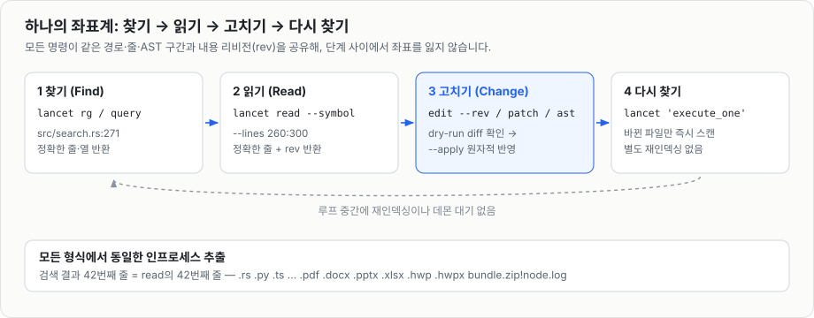

편집과 에이전트
줄·심볼·텍스트 찾기 & 다중 구간 CAS 편집
여러 구간을 고쳐도 줄 번호가 밀리지 않고, 여러 에이전트가 동시에 수정해도 덮어쓰기가 발생하지 않습니다.
lancet edit는 lancet read가 반환한 정확한 줄 번호와 rev 해시로 파일을 수정합니다. --apply를 붙이기 전에는 항상 dry-run unified diff만 출력합니다.

read가 반환하는 줄 번호와 XXH3-64 rev를 edit와 rename이 그대로 소비합니다.단일 구간 지정 (--lines, --symbol, --find)#
대상 1개와 연산 1개를 정확히 짝지어 지정합니다:
- 대상:
--lines START:END|LINE|START:·--symbol NAME·--find TEXT [--all] - 연산:
--with TEXT·--with-file PATH|-·--delete·--insert-before TEXT·--insert-after TEXT
터미널
# 1. 줄 범위 교체
lancet edit src/net.rs --lines 12:15 --with ' timeout_ms: 5000,' \
--rev e70d5a898f122a62 --apply
# 2. AST 심볼 교체 (위쪽 문서 주석과 어트리뷰트도 범위에 포함됨!)
lancet edit src/net.rs --symbol retry_limit --with-file new_fn.rs --rev <REV> --apply
# 3. 고유 텍스트 치환 (LF와 CRLF 개행 모두 매치)
lancet edit src/net.rs --find 'let retries = 3;' --with 'let retries = 5;' --rev <REV> --apply
# 4. 모든 일치 항목 일괄 치환 (--all 없으면 비고유 시 거절)
lancet edit src/net.rs --find 'old_fn(' --with 'new_fn(' --all --rev <REV> --apply자주 겪는 함정 두 가지
--symbol경계:read --symbol과 똑같이 선언 위쪽의///문서 주석과#[attr]어트리뷰트까지 포함합니다. 유지하려면 새 본문에도 함께 넣어야 합니다.--find고유성:--all없이 0회 또는 2회 이상 등장하면invalid_query로 거절하고 해당 줄 번호를 출력해 주변 문맥을 넓히도록 안내합니다.
원자적 다중 구간 편집 (--edits)#
한 번 읽은 파일에서 여러 군데를 고칠 때 줄 번호 편집을 두 번 연달아 호출하면 첫 편집 이후 줄 번호가 밀립니다. --edits FILE이나 --edits -(stdin)에 JSON 배열 하나로 전달하면 모든 구간을 원본 파일 좌표로 해석하고 겹침을 거부한 뒤 전부 반영하거나 한 줄도 쓰지 않습니다.
터미널
lancet edit src/net.rs --rev e70d5a898f122a62 --apply --edits - <<'JSON'
[
{"lines": "10:12", "with": "const RETRIES: u32 = 5;"},
{"symbol": "legacy_helper", "delete": true},
{"find": "old_metric(", "with": "new_metric(", "all": true},
{"lines": "40", "insert_after": " tracing::info!(\"updated\");"}
]
JSON배열의 각 객체는 대상 키(lines, symbol, find 중 1개; find에 한해 all 선택)와 연산 키(with, delete, insert_before, insert_after 중 1개)를 하나씩 가져야 합니다.
멀티 에이전트 CAS 동시성 & 구문 게이트#

status: "conflict"(종료 2)를 내고 0바이트를 씁니다.lancet read --json에서rev를 확보합니다(연속 편집은 직전 응답의rev_after를 이어 씀).lancet edit ... --rev <REV> --apply를 실행합니다. 그사이 다른 프로세스가 썼다면status: "conflict"(종료2)가 반환됩니다.conflict시lancet read로 최신 본문을 다시 읽어 수정을 재계산한 뒤 새rev로 재시도하세요.
Tree-sitter 구문 게이트: 편집 전후를 파싱해 구문 오류가 순증가하는 수정만 거부합니다(이미 구문이 깨진 파일도 단계적으로 복구 가능). 의도적으로 중간 상태를 저장할 때만 --allow-syntax-errors를 씁니다.